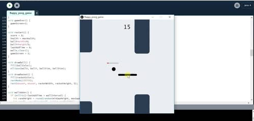

Flappy Pong Game is an original physics-based arcade game that blends the core mechanics of Flappy Bird and Pong, developed using Processing (Java-based) to explore gameplay dynamics, collision physics, and user engagement. The project was created to experiment with realistic gravity and bounce mechanics, achieving high accuracy in collision responses while maintaining smooth and responsive controls. A carefully tuned difficulty curve across three progressive levels significantly improved player retention, while custom visual assets enhanced the overall gameplay experience. Developed within a two-week timeline through multiple testing and iteration cycles, the game demonstrated both technical depth and creative design. Its impact extended beyond development, as the project was featured in Prothom Alo, reaching over two million readers nationwide, generating substantially higher engagement than previous student game projects, and motivating dozens of students to explore game development and interactive programming.
Details about this game can be known from here: View Game details